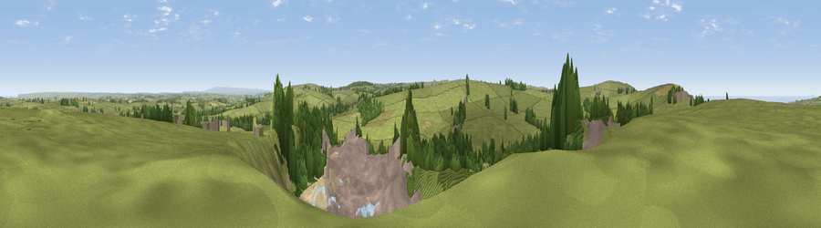

Viewpoint near Otterham
#11068 in England · top 22% of its area beats it · near OtterhamWhere it is
The exact computed spot (SX 16775 93175). Click the marker for map links.
The view, rendered

A 360° render of this exact spot computed from the terrain model, tree cover and land cover — summer colours, afternoon light, calibrated against photographs of famous viewpoints. Real trees, hedges and buildings will differ in detail.
The panorama
Grey silhouette: terrain skyline in each direction (720 bearings, Earth curvature and refraction included). Dashed green: skyline with trees (+15 m) and buildings (+8 m) as obstacles. Blue strip: how far the ground is visible on each bearing.
Where the view opens
Wedge length = distance to the farthest visible ground on that bearing (vegetation-aware). Rings at 10, 25 and 50 km.
What fills the view
62% grassland · 16% woodland · 15% built-up · 4% bare ground · 2% cropland
Angular shares of the visible panorama (visual magnitude), not map area. Landscape diversity 0.48 (0–1 Shannon).
Key numbers
More beautiful places nearby
The staircase of upgrades: each row has a higher view potential than everything closer. Driving times are estimates from straight-line distance, calibrated against real road routing — check an actual route before setting out.
| Place | Direction | Drive | Score |
|---|---|---|---|
| Viewpoint near Higher Crackington | WNW · 1 km | ~3 min | 70.2 |
| Tresparrett Down | W · 3 km | ~8 min | 80.8 |
| Viewpoint near Crackington Haven | WNW · 4 km | ~9 min | 88.1 |
| Viewpoint near Combe Martin | NE · 69 km | ~93 min | 88.9 |
| Holdstone Hill | NE · 71 km | ~94 min | 90.2 |
| The Knoll | E · 136 km | ~160 min | 91.0 |
50.70926, -4.59645 · source: screening · position refined by local search. Computed location — check access rights before visiting.